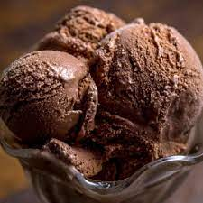

Chocolate Icecream Recipe

A vintage favourite if ever there was one, chocolate ice cream makes everything better! Why not try making it at home by following this simple recipe?
Ingredients
- Nestlé MILKMAID : 200 grams
- Fresh Cream : 150 grams
- Chocolate sauce : 90 ml
- Vanilla extract : 1 tsp
Recipe
- Whip the cream till it is fluffy.
- Add Nestlé MILKMAID, chocolate sauce, vanilla essence & mix well.
- Pour into a freezing tray and freeze till half set. Remove and beat with a whisk or electric beater until smooth. Doing so will help keep the texture of the ice cream soft and creamy while it sets.
- Pour back into tray and freeze till well set.